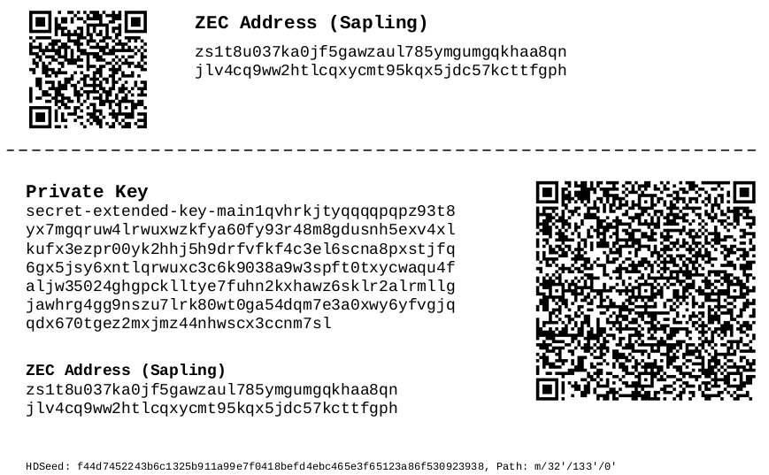

zecpaperwallet¶
zecpaperwallet is a Zcash Sapling paper wallet generator that can run completely offline. You can run it on an air-gapped computer to generate your shielded z-addresses, which will allow you to keep your keys completely offline.
Generated PDF Example: 
Download¶
zecpaperwallet is available as pre-built binaries from our release page. Download the zip file for your platform, extract it and run the ./zecpaperwallet binary.
Generating wallets¶
To generate a Zcash paper wallet, simply run ./zecpaperwallet
You’ll be asked to type some random characters that will add entropy to the random number generator. Run with --help to see all options
Saving as PDFs¶
To generate a Zcash paper wallet and save it as a PDF, run
./zecpaperwallet -z 3 --format pdf zecpaper-output.pdf
This will generate 3 shielded z-addresses and their corresponding private keys, and save them in a PDF file called zecpaper-output.pdf
Compiling from Source¶
zecpaperwallet is built with rust. To compile from source, you install Rust. Basically, you need to:
curl https://sh.rustup.rs -sSf | sh
Checkout the zecpaperwallet repository and build the CLI
git clone https://github.com/adityapk00/zecpaperwallet.git cd zecpaperwallet/cli cargo build --release
The binary is available in the target/release folder.
Ensuring Security¶
When generating paper wallets that will store large amounts of crypto, please take special care to ensure the keys are generated and kept completely offline.
1. zecpaperwallet supports ARMv8 (Raspberry Pi 3+). You can put one in a Faraday cage along with a printer, and print out the PDFs securely.
2. Please ensure you supply random entropy when you run zecpaperwallet. Your entropy is mixed in with system-provided entropy to generate keys
3. If you can, run with unshare, which will disable all network interfaces to a process, providing you with an additional layer of safety. (See next section)
4. After you’ve generated the keys, you can tear off the Address potion of the wallet and take it to your online computer/phone to send the address funds. Please always keep the private key offline.
5. When you’re ready to spend the cold storage keys, import the private key into a full node, then don’t re-use the key again.
Run without network¶
If you are running a newish version of Linux, you can be doubly sure that the process is not contacting the network by running zecpaperwallet without the network namespace.
sudo unshare -n ./target/release/zecpaperwallet
unshare -n runs the process without a network interface which means you can be sure that your data is not being sent across the network.
Help options¶
USAGE: zecpaperwallet [FLAGS] [OPTIONS] [output] FLAGS: -h, --help Prints help information -n, --nohd Don't reuse HD keys. Normally, zecpaperwallet will use the same HD key to derive multiple addresses. This flag will use a new seed for each address --testnet Generate Testnet addresses -V, --version Prints version information OPTIONS: -e, --entropy <entropy> Provide additional entropy to the random number generator. Any random string, containing 32-64 characters -f, --format <FORMAT> What format to generate the output in [default: json] [possible values: pdf, json] -t, --taddrs <t_addresses> Numbe rof T addresses to generate [default: 0] -z, --zaddrs <z_addresses> Number of Z addresses (Sapling) to generate [default: 1] ARGS: <output> Name of output file.